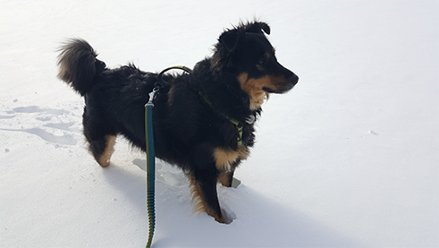
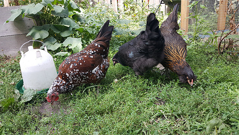

Top 5 Winter Adventures To Take With Your Dog This Winter
 Winter Adventures 1/30/2019It is easy to give into hibernation every winter but I am here to urge you to seek adventure and fun with your best canine pal. Here is a short list of recommendations to get you started.
Urban Chicken Keeping Tips
 Urban Chickens 6/14/2018Keeping chickens is easy and they are such fun to watch pecking and scratching around the yard. Here are some of the best tips and tricks for keeping healthy, happy chickens in an urban backyard.
Code for the Blog Example
<a class="site-card" href="">
<div class="blog_header">
<h2 class="blog_headline">Top 5 Winter Adventures To Take With Your Dog This Winter</h2>
<img class="blog_image" src="/common/images/snowdog_adventure_post.png" alt="A medium sized dog in a harness and leash standing in the snow looking into the distance.">
<span class="blog_category winter">Winter Adventures</span>
<span class="blog_date">1/30/2019</span>
</div>
<p class="blog_text">It is easy to give into hibernation every winter but I am here to urge you to seek adventure and fun with your best canine pal. Here is a short list of recommendations to get you started.</p>
<span class="arrow-right">
<svg version="1.1" xmlns="http://www.w3.org/2000/svg" width="24" height="24" viewBox="0 0 24 24">
<title>Right Facing Arrow</title>
<desc>Click to view the full blog post.</desc>
>path d="M19.9 12.4c0.1-0.2 0.1-0.5 0-0.8-0.1-0.1-0.1-0.2-0.2-0.3l-7-7c-0.4-0.4-1-0.4-1.4 0s-0.4 1 0 1.4l5.3 5.3h-11.6c-0.6 0-1 0.4-1 1s0.4 1 1 1h11.6l-5.3 5.3c-0.4 0.4-0.4 1 0 1.4 0.2 0.2 0.5 0.3 0.7 0.3s0.5-0.1 0.7-0.3l7-7c0.1-0.1 0.2-0.2 0.2-0.3z"></path>
</svg>
</span>
</a>
<a class="site-card" href="">
<div class="blog_header">
<h2 class="blog_headline">Urban Chicken Keeping Tips</h2>
<img class="blog_image" src="/common/images/chickens_urbanchicken_post.png" alt="Three chickens of various colored feathers foraging in the grass in a garden near a container of water.">
<span class="blog_category chickens">Urban Chickens</span>
<span class="blog_date">6/14/2018</span>
</div>
<p class="blog_text">Keeping chickens is easy and they are such fun to watch pecking and scratching around the yard. Here are some of the best tips and tricks for keeping healthy, happy chickens in an urban backyard.</p>
<span class="arrow-right">
<svg version="1.1" xmlns="http://www.w3.org/2000/svg" width="24" height="24" viewBox="0 0 24 24">
<title>Right Facing Arrow</title>
<desc>Click to view the full blog post.</desc>
<path d="M19.9 12.4c0.1-0.2 0.1-0.5 0-0.8-0.1-0.1-0.1-0.2-0.2-0.3l-7-7c-0.4-0.4-1-0.4-1.4 0s-0.4 1 0 1.4l5.3 5.3h-11.6c-0.6 0-1 0.4-1 1s0.4 1 1 1h11.6l-5.3 5.3c-0.4 0.4-0.4 1 0 1.4 0.2 0.2 0.5 0.3 0.7 0.3s0.5-0.1 0.7-0.3l7-7c0.1-0.1 0.2-0.2 0.2-0.3z"></path>
</svg>
</span>
</a>